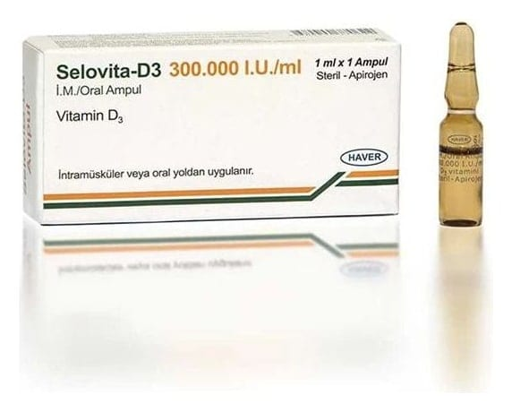

Selovita-D3 300.000 IU/ml IM Çözelti

Ne için kullanılır
KT · Bölüm 1• SELOVİTA-D3, 1 mL’lik amber renkli ampuller içinde, açık sarı renkli, karakteristik kokulu, yağlı çözeltilerdir. Her bir karton kutu 1 adet 1 mL'lik ampul içermektedir. Her 1 mL’lik ampul etkin madde olarak D
vitamini içerir. D3 vitamini koyun yünü yağından üretilmektedir.
• SELOVİTA-D3 , kalsiyum ve fosfat metabolizmasını düzenleyen bir hormon olan D3 vitamini içerir.
• SELOVİTA-D3 , D vitamini eksikliğinde sadece gastrointestinal (mide-bağırsak) emilim bozukluğu olan hastalarda endikedir.
Bu ilacı kullanmaya başlamadan önce bu KULLANMA TALİMATINI dikkatlice okuyunuz, çünkü sizin için önemli bilgiler içermektedir. • Bu kullanma talimatını saklayınız. Daha sonra tekrar okumaya ihtiyaç duyabilirsiniz. • Eğer ilave sorularınız olursa, lütfen doktorunuza veya eczacınıza danışınız. • Bu ilaç kişisel olarak sizin için reçete edilmiştir, başkalarına vermeyiniz. • Bu ilacın kullanımı sırasında, doktora veya hastaneye gittiğinizde doktorunuza bu ilacı kullandığınızı söyleyiniz. • Bu talimatta yazılanlara aynen uyunuz. İlaç hakkında size önerilen dozun dışında yüksek veya düşük doz kullanmayınız.